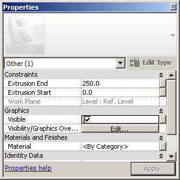
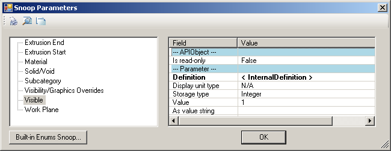
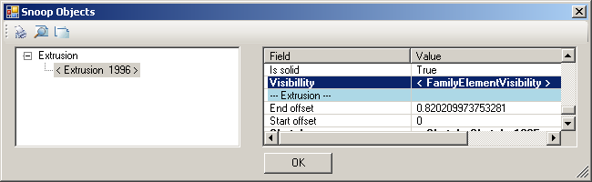

Family Element Visibility
Here is a question on programmatically setting the visibility of an element in a family document:
Question: I need to assign a Yes/No parameter to the visibility property of a family feature, e.g. an extrusion element. I need to do this to suppress a specific extrude feature for certain types. I know how to do it manually, by selecting the feature and then clicking the visibility toggle in the element properties. How can I achieve it through the API?
Answer: I created a sample family to test this by adding an extrusion element in a new family document using the Metric Generic Model template. On the extrusion, I can see the property you refer to in the element properties as the Properties > Graphics > Visible toggle, which is displayed as a Boolean check box in the user interface:

If I look at the extrusion element using RevitLookup, I see that this property is available through the element parameters: Add-Ins > Revit Lookup > Snoop Current Selection > Extrusion > Parameters > Visible with the corresponding built-in parameter IS_VISIBLE_PARAM:

You can access this using the standard get_Parameter method on the extrusion element.
We made significant use of this property and showed how to hook it up with an externally accessible family parameter so that it can be controlled from outside on individual instances of the family inserted into the project file in the discussion on DWG and DWF family creation.
Note that if you wish have more detailed control over the visibility of the feature, you can also use its visibility property returning an instance of the FamilyElementVisibility class:

The Revit API help file RevitAPI.chm description of the FamilyElementVisibility class includes some sample code on using this. Its use to set up different visibility of family elements for different detail levels of the inserted instances is also demonstrated by step 4 of the Family API labs.